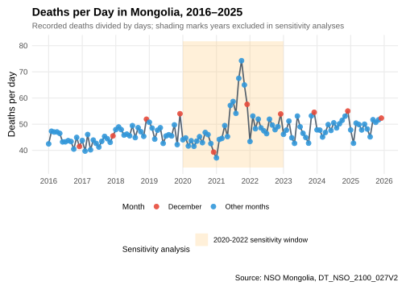
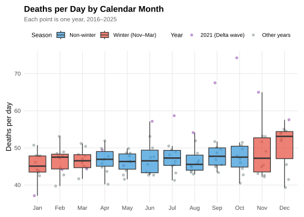
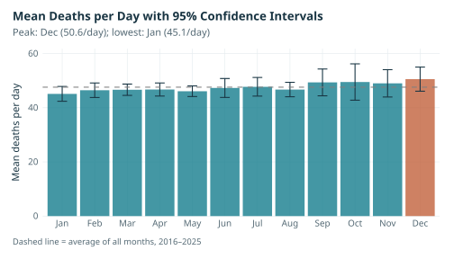
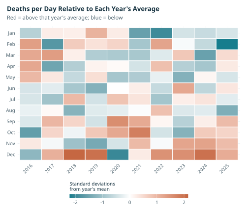
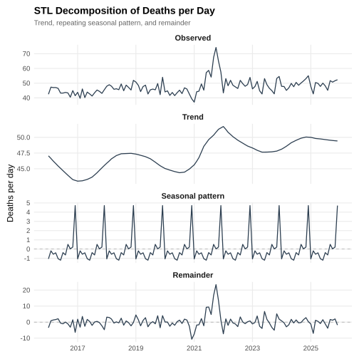
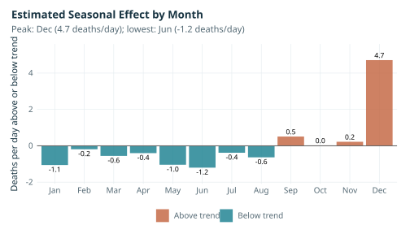
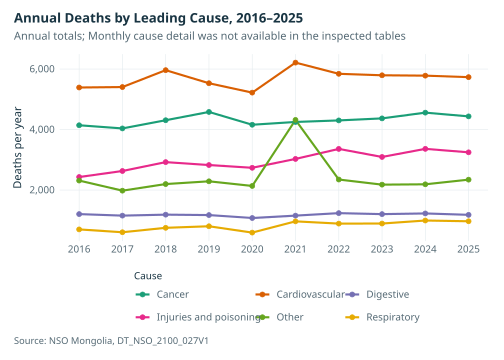
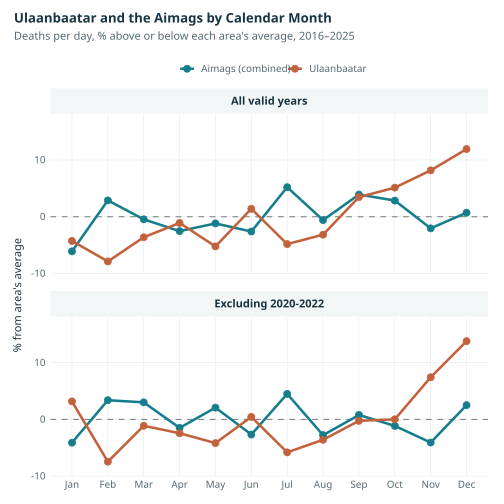
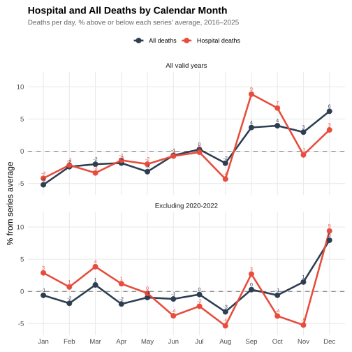

Does December Have the Most Recorded Deaths?
Source:vignettes/articles/mortality-analysis.Rmd
mortality-analysis.RmdRead with caution. The main finding, a December peak, is unconfirmed. If the National Statistics Office (NSO) counts deaths by the month they are registered rather than the month they occur, year-end administrative catch-up could inflate December. It is not yet confirmed which date the monthly series uses. Treat the December result as a pattern in the published statistics, not as evidence that more people die in December.
library(mongolstats)
library(dplyr)
library(tidyr)
library(ggplot2)
library(lubridate)
library(scales)
# Checked teaching helpers are shipped with the package and can be inspected.
source(system.file("examples", "analysis-helpers.R", package = "mongolstats"), local = TRUE)
old_options <- nso_options(mongolstats.lang = "en")
# Reusable theme for all plots in this analysis
theme_mortality <- function(base_size = 12) {
theme_minimal(base_size = base_size) +
theme(
plot.margin = margin(10, 10, 10, 10),
plot.title = element_text(face = "bold", size = base_size + 2),
plot.subtitle = element_text(size = base_size - 2, color = "grey40"),
legend.text = element_text(size = base_size - 3),
legend.title = element_text(size = base_size - 2),
panel.grid.minor = element_blank()
)
}
old_theme <- theme_set(theme_mortality())
# Formatting helpers for inline results
fmt_pct <- function(x, digits = 1) sprintf(paste0("%+.", digits, "f%%"), x)
fmt_num <- function(x, digits = 1) format(round(x, digits), nsmall = digits)
full_month <- function(m) month.name[m]Overview
A social media post claimed that “the highest deaths are occurring in December” in Mongolia, and suggested New Year celebrations might be the reason. This article checks the claim against NSO’s monthly death statistics, with the COVID-19 pandemic (2020–2022) in mind.
Questions
- Does December have the most deaths? Once months of different lengths are put on an equal footing, is December the peak?
- How do recorded winter and nonwinter averages differ? Calendar patterns can be described, but these data alone cannot estimate a cold effect.
- Can these data explain why? What can monthly totals, annual causes of death, regional and hospital data tell us, and what can they not?
Data Sources
We use three NSO tables:
| Table | Description | Granularity |
|---|---|---|
| DT_NSO_2100_027V2 | Deaths by aimag and the capital, by month | Monthly |
| DT_NSO_2100_027V3 | Deaths in hospitals by aimag and the capital, by month | Monthly |
| DT_NSO_2100_027V1 | Deaths by leading cause, by region and year | Annual |
All figures are counts, not rates. Mongolia’s population grew over the period, so slow upward trends partly reflect population growth and ageing. Dividing by days adjusts month length, not population at risk. Within-year changes and age composition can still affect comparisons.
1. Monthly Death Patterns
Fetching and Preparing Data
death_tbl <- "DT_NSO_2100_027V2"
months_meta <- nso_dim_values(death_tbl, "Month", labels = "en")
# Add calendar fields and deaths per day to an NSO monthly table
parse_months <- function(data) {
data |>
mutate(
date = as.Date(paste0(Month_en, "-01")),
year = year(date),
month = month(date),
month_name = factor(month.abb[month], levels = month.abb),
days = unname(days_in_month(date)),
daily_avg = value / days
)
}
# National deaths (Region code "0" = total) for every published month
deaths_all <- nso_data(
tbl_id = death_tbl,
selections = list(Region = "0", Month = months_meta$label_en),
labels = "en"
) |>
parse_months() |>
filter(!is.na(value)) |>
arrange(date)
analysis_keys(deaths_all, "date")
analysis_count_values(deaths_all$value)
# Keep twelve distinct observed months in a year, not merely twelve rows.
complete_years <- deaths_all |>
summarise(n = n(), n_months = n_distinct(month), .by = year) |>
filter(n == 12, n_months == 12) |>
pull(year)
stopifnot(length(complete_years) >= 3L, all(diff(complete_years) == 1))
first_year <- min(complete_years)
last_year <- max(complete_years)
n_years <- length(complete_years)
period <- paste0(first_year, "–", last_year)
covid_years <- 2020:2022
deaths_monthly <- deaths_all |>
filter(year %in% complete_years) |>
mutate(
Month_Type = if_else(month == 12, "December", "Other months"),
Season = if_else(month %in% c(11, 12, 1, 2, 3), "Winter (Nov–Mar)", "Non-winter")
)
# Require a regular monthly index before time-series decomposition.
stopifnot(identical(
deaths_monthly$date,
seq(as.Date(paste0(first_year, "-01-01")),
as.Date(paste0(last_year, "-12-01")),
by = "month"
)
))The monthly series begins in January 2016. This analysis uses the 10 complete years from 2016 to 2025.
Methodological note: All monthly comparisons use deaths per day (deaths in the month ÷ days in the month). This stops February (28 or 29 days) and 30-day months from looking lower than 31-day months simply because they are shorter. December and January both have 31 days, so this adjustment does not change how those two compare.
Time Series with COVID-19 Context
covid_periods <- tibble::tribble(
~Start, ~End, ~Phase,
"2020-01-01", "2022-12-31", "2020-2022 sensitivity window"
) |>
mutate(across(c(Start, End), as.Date))
y_range <- range(deaths_monthly$daily_avg)
y_min <- y_range[1] * 0.9
y_max <- y_range[2] * 1.1
deaths_monthly |>
ggplot(aes(x = date, y = daily_avg)) +
geom_rect(
data = covid_periods,
aes(xmin = Start, xmax = End, ymin = y_min, ymax = y_max, fill = Phase),
inherit.aes = FALSE, alpha = 0.3
) +
geom_line(color = "#2c3e50", linewidth = 0.8, alpha = 0.8) +
geom_point(aes(color = Month_Type), size = 2.5, alpha = 0.9) +
scale_color_manual(
values = c("December" = "#e74c3c", "Other months" = "#3498db"),
name = "Month"
) +
scale_fill_manual(
values = c(
"2020-2022 sensitivity window" = "#ffcc80"
),
name = "Sensitivity analysis"
) +
scale_x_date(date_breaks = "1 year", date_labels = "%Y") +
scale_y_continuous(labels = comma, limits = c(y_min, y_max)) +
labs(
title = paste0("Deaths per Day in Mongolia, ", period),
subtitle = "Recorded deaths divided by days; shading marks years excluded in sensitivity analyses",
x = NULL,
y = "Deaths per day",
caption = "Source: NSO Mongolia, DT_NSO_2100_027V2"
) +
theme(legend.position = "bottom", legend.box = "vertical", legend.box.just = "left") +
guides(
color = guide_legend(order = 1, nrow = 1),
fill = guide_legend(order = 2, nrow = 2)
)
What the series shows:
- Level: These are recorded counts per day, not population mortality rates. Population growth and ageing can contribute to changes in the series.
- Extremes: The highest observed month is October 2021, at 74.3 deaths per day; the lowest is January 2021, at 37.1. Timing alone cannot distinguish changes in deaths from reporting disruption.
- December: Red points identify December observations for comparison with other months.
Monthly Distribution
monthly_stats <- deaths_monthly |>
summarise(
deaths = sum(value), days = sum(days),
mean_daily = mean(daily_avg),
sd_daily = sd(daily_avg),
n = n(),
.by = c(month, month_name)
) |>
mutate(
se = sd_daily / sqrt(n),
ci_lower = mean_daily - qt(0.975, n - 1) * se,
ci_upper = mean_daily + qt(0.975, n - 1) * se
) |>
arrange(month)
deaths_monthly |>
mutate(year_type = if_else(year == 2021, "2021 (Delta wave)", "Other years")) |>
ggplot(aes(x = month_name, y = daily_avg)) +
geom_point(
aes(color = year_type),
position = position_jitter(width = 0.2, height = 0, seed = 2025),
alpha = 0.5, size = 1.5
) +
geom_boxplot(aes(fill = Season), alpha = 0.7, outlier.shape = NA) +
scale_fill_manual(
values = c("Winter (Nov–Mar)" = "#e74c3c", "Non-winter" = "#3498db"),
name = "Season"
) +
scale_color_manual(
values = c("2021 (Delta wave)" = "#8e44ad", "Other years" = "#7f8c8d"),
name = "Year"
) +
scale_y_continuous(labels = comma) +
labs(
title = "Deaths per Day by Calendar Month",
subtitle = paste0("Each point is one year, ", period),
x = NULL,
y = "Deaths per day"
) +
theme(legend.position = "top") +
guides(fill = guide_legend(order = 1), color = guide_legend(order = 2))
Reading the boxes: Each distribution contains one recorded deaths/day value per year for that calendar month. The pooled winter versus nonwinter contrast, calculated as total deaths divided by total days in each season, is -0.1%. Excluding December from winter gives -1.7%. Highlighted 2021 observations allow the reader to see that year’s influence; these comparisons do not identify temperature effects.
Monthly Averages with Confidence Intervals
Note: These intervals use a t distribution for 10 years and treat years as independent. Year-to-year correlation is ignored, and the COVID-19 years are included, so they are a rough guide only.
peak_month <- slice_max(monthly_stats, mean_daily, n = 1)
trough_month <- slice_min(monthly_stats, mean_daily, n = 1)
monthly_stats |>
mutate(bar_type = if_else(month == peak_month$month, "Peak month", "Other months")) |>
ggplot(aes(x = month_name, y = mean_daily)) +
geom_col(aes(fill = bar_type), alpha = 0.8) +
geom_errorbar(aes(ymin = ci_lower, ymax = ci_upper), width = 0.3, color = "#2c3e50") +
geom_hline(yintercept = mean(monthly_stats$mean_daily), linetype = "dashed", color = "grey50") +
scale_fill_manual(values = c("Other months" = "#3498db", "Peak month" = "#e74c3c"), guide = "none") +
scale_y_continuous(labels = comma, expand = expansion(mult = c(0, 0.1))) +
labs(
title = "Mean Deaths per Day with 95% Confidence Intervals",
subtitle = paste0(
"Peak: ", peak_month$month_name, " (", fmt_num(peak_month$mean_daily),
"/day); lowest: ", trough_month$month_name, " (", fmt_num(trough_month$mean_daily), "/day)"
),
x = NULL,
y = "Mean deaths per day",
caption = paste0("Dashed line = average of all months, ", period)
)
December averages 50.6 recorded deaths per day, +6.8% relative to total deaths divided by total days in the other eleven months. Excluding 2020-2022, the highest equal-year monthly mean is in December and December’s contrast is +8.7%. These are descriptive contrasts; they do not establish their cause.
2. Heat Map: Year × Month
heatmap_data <- deaths_monthly |>
mutate(
z_score = (daily_avg - mean(daily_avg)) / sd(daily_avg),
.by = year
) |>
mutate(month_name = factor(month_name, levels = rev(month.abb)))
heatmap_data |>
ggplot(aes(x = factor(year), y = month_name, fill = z_score)) +
geom_tile(color = "white", linewidth = 0.5) +
scale_fill_gradient2(
low = "#3498db", mid = "white", high = "#e74c3c",
midpoint = 0, name = "Standard deviations\nfrom year's mean"
) +
labs(
title = "Deaths per Day Relative to Each Year's Average",
subtitle = "Red = above that year's average; blue = below",
x = NULL,
y = NULL
) +
theme(
axis.text.x = element_text(angle = 45, hjust = 1),
legend.position = "bottom",
legend.key.width = unit(1.5, "cm")
)
Each column is standardised within its year, so this shows each month’s position within its year rather than absolute levels. December is above its year’s average in 8 of 10 years. January is above average in only 4, and February in 5. In 2021 the Delta wave dominates the late summer and autumn months.
3. Statistical Checks
Seasonal Decomposition (STL)
STL (Seasonal and Trend decomposition using Loess) splits the series into a smooth trend, a repeating seasonal pattern, and a remainder.
ts_deaths <- ts(deaths_monthly$daily_avg, start = c(first_year, 1), frequency = 12)
# s.window = "periodic" estimates one seasonal pattern shared by all years;
# robust = TRUE downweights unusual months such as the 2021 surge.
decomp <- stl(ts_deaths, s.window = "periodic", robust = TRUE)
component_levels <- c("Observed", "Trend", "Seasonal pattern", "Remainder")
decomp_df <- tibble(
date = deaths_monthly$date,
Observed = as.numeric(ts_deaths),
Trend = as.numeric(decomp$time.series[, "trend"]),
`Seasonal pattern` = as.numeric(decomp$time.series[, "seasonal"]),
Remainder = as.numeric(decomp$time.series[, "remainder"])
) |>
pivot_longer(-date, names_to = "component", values_to = "value") |>
mutate(component = factor(component, levels = component_levels))
zero_lines <- tibble(
component = factor(c("Seasonal pattern", "Remainder"), levels = component_levels),
yintercept = 0
)
decomp_df |>
ggplot(aes(x = date, y = value)) +
geom_hline(
data = zero_lines, aes(yintercept = yintercept),
linetype = "dashed", color = "grey60", linewidth = 0.3
) +
geom_line(color = "#2c3e50", linewidth = 0.6) +
facet_wrap(~component, ncol = 1, scales = "free_y") +
scale_x_date(date_breaks = "2 years", date_labels = "%Y") +
labs(
title = "STL Decomposition of Deaths per Day",
subtitle = "Trend, repeating seasonal pattern, and remainder",
x = NULL,
y = "Deaths per day"
) +
theme(strip.text = element_text(face = "bold", size = 11), panel.spacing = unit(0.5, "lines"))
The Seasonal Pattern
seasonal_cycle <- tibble(
month = 1:12,
month_name = factor(month.abb, levels = month.abb),
seasonal_effect = as.numeric(decomp$time.series[1:12, "seasonal"])
)
peak_seasonal <- slice_max(seasonal_cycle, seasonal_effect, n = 1)
trough_seasonal <- slice_min(seasonal_cycle, seasonal_effect, n = 1)
other_max <- max(abs(seasonal_cycle$seasonal_effect[seasonal_cycle$month != peak_seasonal$month]))
seasonal_cycle |>
ggplot(aes(x = month_name, y = seasonal_effect)) +
geom_col(aes(fill = if_else(seasonal_effect > 0, "Above trend", "Below trend")), alpha = 0.8) +
geom_hline(yintercept = 0, color = "grey40") +
geom_text(
aes(label = fmt_num(seasonal_effect), vjust = if_else(seasonal_effect > 0, -0.5, 1.5)),
size = 3
) +
scale_fill_manual(values = c("Above trend" = "#e74c3c", "Below trend" = "#3498db"), name = NULL) +
scale_y_continuous(expand = expansion(mult = 0.15)) +
labs(
title = "Estimated Seasonal Effect by Month",
subtitle = paste0(
"Peak: ", peak_seasonal$month_name, " (", fmt_num(peak_seasonal$seasonal_effect),
" deaths/day); lowest: ", trough_seasonal$month_name, " (",
fmt_num(trough_seasonal$seasonal_effect), " deaths/day)"
),
x = NULL,
y = "Deaths per day above or below trend"
) +
theme(legend.position = "bottom")
STL description: The largest fitted periodic component is in December, about 4.7 recorded deaths per day above the smooth trend. STL imposes one repeating seasonal pattern here. It does not identify a temperature effect or establish the absence of one.
Month Effects After Removing Year-to-Year Changes
A regression with a term for each year and each calendar month estimates how far each month sits from the average month, after removing differences between years such as population growth. We leave out the pandemic years 2020–2022.
fit_data <- deaths_monthly |>
filter(!year %in% covid_years) |>
mutate(
year_f = factor(year),
# December first so that, with sum-to-zero contrasts, coefficient 1 is
# December's deviation from the average month and coefficient 2 January's
month_f = factor(month, levels = c(12, 1:11))
)
month_fit <- lm(
daily_avg ~ year_f + month_f,
data = fit_data,
contrasts = list(year_f = "contr.sum", month_f = "contr.sum")
)
month_ci <- confint(month_fit)
month_effects <- tibble(
Month = c("December", "January"),
term = c("month_f1", "month_f2")
) |>
mutate(
estimate = coef(month_fit)[term],
lower = month_ci[term, 1],
upper = month_ci[term, 2]
)
month_effects |>
transmute(
Month,
`Deaths/day vs average month` = fmt_num(estimate),
`95% CI` = paste0(fmt_num(lower), " to ", fmt_num(upper))
) |>
knitr::kable()| Month | Deaths/day vs average month | 95% CI |
|---|---|---|
| December | 3.7 | 1.7 to 5.7 |
| January | -0.3 | -2.3 to 1.7 |
December has an estimated deviation of 3.7 deaths per day from the average month (95% CI 1.7 to 5.7), and January -0.3 (-2.3 to 1.7). These model-based intervals may be miscalibrated because they ignore serial dependence and unequal residual variation. Year effects remove overall differences between years, not all changes within a year or changes in age composition.
Count-model sensitivity and residual checks
count_fit <- glm(value ~ year_f + month_f + offset(log(days)),
family = quasipoisson(), data = fit_data
)
pearson <- residuals(count_fit, type = "pearson")
dispersion <- sum(pearson^2) / df.residual(count_fit)
# Excluding pandemic years leaves gaps: do not pretend observations on
# either side of a gap are consecutive when inspecting residual correlation.
diagnostic_data <- mutate(fit_data, residual = pearson) |> arrange(date)
residual_pairs <- diagnostic_data |>
mutate(previous_date = lag(date), previous_residual = lag(residual)) |>
filter(date == lubridate::add_with_rollback(previous_date, lubridate::period(months = 1)))
lag1_correlation <- if (nrow(residual_pairs) >= 3L &&
sd(residual_pairs$residual) > 0 && sd(residual_pairs$previous_residual) > 0) {
cor(residual_pairs$residual, residual_pairs$previous_residual)
} else {
NA_real_
}
tibble(Pearson_dispersion = dispersion, adjacent_month_residual_correlation = lag1_correlation)
#> # A tibble: 1 × 2
#> Pearson_dispersion adjacent_month_residual_correlation
#> <dbl> <dbl>
#> 1 4.91 -0.0648The quasi-Poisson model uses the actual counts and a month-length offset. Dispersion adjustment alone does not correct serial dependence. These diagnostics are a sensitivity check, not a validated inferential model; robust or block-based inference would also need caution with so few years. Counts/day are not population mortality rates.
Harmonic Regression
A harmonic regression fits a smooth annual wave plus a linear trend. It is a useful check on whether there is a broad, gradual seasonal cycle.
harmonic_data <- deaths_monthly |>
filter(!year %in% covid_years) |>
mutate(
time_index = as.numeric(date - min(date)) / 365.25,
sin_annual = sin(2 * pi * month / 12),
cos_annual = cos(2 * pi * month / 12)
)
harmonic_model <- lm(daily_avg ~ time_index + sin_annual + cos_annual, data = harmonic_data)
coef_sin <- coef(harmonic_model)["sin_annual"]
coef_cos <- coef(harmonic_model)["cos_annual"]
amplitude <- sqrt(coef_sin^2 + coef_cos^2)
# The wave peaks at month = phase; month 12 corresponds to phase 0
phase <- atan2(coef_sin, coef_cos) * 12 / (2 * pi)
peak_index <- (round(phase) - 1) %% 12 + 1
harmonic_results <- list(
peak_month = month.name[peak_index],
amplitude = fmt_num(amplitude),
amplitude_pct = fmt_num(amplitude / mean(harmonic_data$daily_avg) * 100),
r_squared = fmt_num(summary(harmonic_model)$r.squared * 100)
)| Metric | Value |
|---|---|
| Estimated peak of the smooth wave | December |
| Seasonal amplitude | ±0.9 deaths/day (2.0% of the mean) |
| Model fit (R², including trend) | 33.7% |
This sensitivity fit excludes 2020-2022. A single annual harmonic can miss narrow peaks and changes over time; a small fitted wave does not establish the absence of seasonality or a cold effect. It summarises these recorded counts under a restricted model.
4. Is the December Spike Real?
The following compares December with the preceding November and following January. Exact calendar neighbours are required. It is a local descriptive contrast, not a test of cold exposure, holiday effects or mortality displacement.
december_check <- analysis_neighbours(deaths_all) |>
filter(year %in% complete_years, is.finite(neighbours), neighbours > 0) |>
mutate(ratio = (daily_avg / neighbours - 1) * 100)
december_check |>
transmute(
Year = year, `December deaths/day` = fmt_num(daily_avg),
`Average of Nov and next Jan` = fmt_num(neighbours),
`December vs neighbours` = fmt_pct(ratio)
) |>
knitr::kable()| Year | December deaths/day | Average of Nov and next Jan | December vs neighbours |
|---|---|---|---|
| 2016 | 41.5 | 44.4 | -6.5% |
| 2017 | 45.5 | 45.5 | +0.0% |
| 2018 | 51.9 | 48.1 | +8.0% |
| 2019 | 54.0 | 43.1 | +25.2% |
| 2020 | 39.3 | 39.9 | -1.4% |
| 2021 | 57.6 | 54.2 | +6.2% |
| 2022 | 53.9 | 47.6 | +13.2% |
| 2023 | 54.5 | 50.5 | +8.0% |
| 2024 | 55.0 | 50.4 | +9.1% |
| 2025 | 52.3 | 49.6 | +5.5% |
December is at least 5% above its neighbours in 7 of 10 years. Possible explanations remain hypotheses:
- Recording timing. If deaths are counted by registration month, deaths from earlier in the year may be registered in December as offices close their annual records. This would produce a December-only spike without any change in how many people die.
- Mortality displacement. A short-term exposure can advance some deaths. Deviations from an overall month mean are not counterfactual excess and deficit estimates, and displacement need not be confined to the following January. These monthly comparisons cannot test that mechanism.
The first explanation can be checked directly: NSO’s metadata or
staff can confirm whether DT_NSO_2100_027V2 counts deaths
by date of death or date of registration. Until then, the December spike
should not be read as a change in risk.
5. Causes of Death (Annual Data Only)
Data availability: The NSO tables inspected for this article provide deaths by cause by year, not by month, so these data cannot show which causes drive a monthly peak. NSO’s monthly communicable disease table (
DT_NSO_2100_035V1) is not a usable proxy for respiratory infection: its total includes COVID-19 cases and is otherwise made up mostly of sexually transmitted infections, varicella, and hand, foot and mouth disease.
cause_tbl <- "DT_NSO_2100_027V1"
indicators <- nso_dim_values(cause_tbl, "Indicator", labels = "en")
cause_years <- nso_dim_values(cause_tbl, "Year", labels = "en")
cause_deaths <- nso_data(
tbl_id = cause_tbl,
selections = list(Indicator = indicators$code, Region = "0", Year = cause_years$code),
labels = "en"
) |>
filter(!is.na(value)) |>
mutate(
year = as.integer(Year_en),
Cause = case_when(
grepl("Injury", Indicator_en) ~ "Injuries and poisoning",
grepl("cardiovascular", Indicator_en) ~ "Cardiovascular",
grepl("respiratory", Indicator_en) ~ "Respiratory",
grepl("digestive", Indicator_en) ~ "Digestive",
grepl("Cancer", Indicator_en) ~ "Cancer",
.default = Indicator_en
)
) |>
filter(Cause != "Deaths", year %in% complete_years)
cause_deaths |>
ggplot(aes(x = year, y = value, color = Cause)) +
geom_line(linewidth = 1) +
geom_point(size = 2) +
scale_color_brewer(palette = "Dark2") +
scale_y_continuous(labels = comma) +
scale_x_continuous(breaks = complete_years) +
labs(
title = paste0("Annual Deaths by Leading Cause, ", period),
subtitle = "Annual totals; Monthly cause detail was not available in the inspected tables",
x = NULL,
y = "Deaths per year",
caption = "Source: NSO Mongolia, DT_NSO_2100_027V1"
) +
theme(legend.position = "right")
- Cardiovascular disease is the leading cause every year, with 5,221 to 6,213 deaths a year.
- Cancer is second and changed by +7% between 2016 and 2025.
- Injuries and poisoning changed by +34% over the same period. This rise deserves attention in its own right.
- “Other” spikes in 2021, during the pandemic. The cause classification needs confirmation before attributing that change to COVID-19.
None of this tells us whether any cause peaks in December. Annual totals cannot support or rule out a New Year effect.
6. Ulaanbaatar and the Aimags
regions_meta <- nso_dim_values(death_tbl, "Region", labels = "en")
region_units <- regions_meta$code[nchar(regions_meta$code) == 3 & regions_meta$code != "511"]
stopifnot(length(region_units) == 21L)
regional_raw <- nso_data(death_tbl,
list(Region = c("5", region_units), Month = months_meta$label_en),
labels = "en"
)
regional_status <- nso_value_status(regional_raw)
analysis_keys(
regional_raw, c("Region", "Month_en"),
tidyr::expand_grid(Region = c("5", region_units), Month_en = months_meta$label_en)
)
regional_deaths <- regional_raw |>
mutate(area = if_else(Region == "5", "Ulaanbaatar", "Aimags (combined)")) |>
parse_months() |>
filter(year %in% complete_years) |>
summarise(value = analysis_sum(value), .by = c(area, date, year, month, month_name, days)) |>
mutate(daily_avg = value / days)
regional_check <- regional_deaths |>
summarise(value = analysis_sum(value), .by = date) |>
analysis_pair(select(deaths_monthly, date, national = value), by = "date")
stopifnot(all(is.finite(regional_check$value)), all(regional_check$value == regional_check$national))
area_monthly <- bind_rows(
mutate(regional_deaths, analysis = "All valid years"),
filter(regional_deaths, !year %in% covid_years) |> mutate(analysis = "Excluding 2020-2022")
) |>
summarise(mean_daily = mean(daily_avg), .by = c(analysis, area, month, month_name)) |>
mutate(pct_of_mean = (mean_daily / mean(mean_daily) - 1) * 100, .by = c(analysis, area))
area_monthly |>
ggplot(aes(x = month_name, y = pct_of_mean, color = area, group = area)) +
facet_wrap(~analysis, ncol = 1) +
geom_hline(yintercept = 0, linetype = "dashed", color = "grey50") +
geom_line(linewidth = 1.2) +
geom_point(size = 3) +
geom_text(aes(label = round(pct_of_mean)), vjust = -1, size = 2.5, show.legend = FALSE) +
scale_color_manual(values = c("Ulaanbaatar" = "#e74c3c", "Aimags (combined)" = "#3498db"), name = NULL) +
scale_y_continuous(expand = expansion(mult = c(0.1, 0.2))) +
labs(
title = "Ulaanbaatar and the Aimags by Calendar Month",
subtitle = paste0("Deaths per day, % above or below each area's average, ", period),
x = NULL,
y = "% from area's average"
) +
theme(legend.position = "top")
The panels repeat the regional comparison with and without 2020-2022. The all-year December deviations are +12% in the capital and +1% in the aimags combined. Differences in calendar patterns do not identify exposure effects: population composition, referral, recording practices and other factors may differ. The aimags combined are not a uniformly rural population.
7. Hospital and All Deaths
Hospital and all-death profiles can be compared only over identical observed months with compatible definitions. Hospital deaths are a subset of all deaths, so these series are dependent. Certification speed and registration delay are unverified hypotheses.
hospital_tbl <- "DT_NSO_2100_027V3"
hospital_months <- nso_dim_values(hospital_tbl, "Month", labels = "en")
hospital_deaths <- nso_data(
tbl_id = hospital_tbl,
selections = list(Region = "0", Month = hospital_months$label_en),
labels = "en"
) |>
filter(!is.na(value)) |>
parse_months() |>
filter(year %in% complete_years)
hospital_pair <- analysis_hospital_pair(deaths_monthly, hospital_deaths)
comparison_data <- bind_rows(
deaths_monthly |> mutate(type = "All deaths"),
hospital_deaths |> mutate(type = "Hospital deaths")
) |>
select(date, year, month, month_name, value, daily_avg, type)
type_monthly <- bind_rows(
mutate(comparison_data, analysis = "All valid years"),
filter(comparison_data, !year %in% covid_years) |> mutate(analysis = "Excluding 2020-2022")
) |>
summarise(mean_daily = mean(daily_avg), .by = c(analysis, type, month, month_name)) |>
mutate(pct_of_mean = (mean_daily / mean(mean_daily) - 1) * 100, .by = c(analysis, type))
type_monthly |>
ggplot(aes(x = month_name, y = pct_of_mean, color = type, group = type)) +
facet_wrap(~analysis, ncol = 1) +
geom_hline(yintercept = 0, linetype = "dashed", color = "grey50") +
geom_line(linewidth = 1.2) +
geom_point(size = 3) +
geom_text(aes(label = round(pct_of_mean)), vjust = -1, size = 2.5, show.legend = FALSE) +
scale_color_manual(values = c("All deaths" = "#2c3e50", "Hospital deaths" = "#e74c3c"), name = NULL) +
scale_y_continuous(expand = expansion(mult = c(0.1, 0.2))) +
labs(
title = "Hospital and All Deaths by Calendar Month",
subtitle = paste0("Deaths per day, % above or below each series' average, ", period),
x = NULL,
y = "% from series average"
) +
theme(legend.position = "top")
Hospitals account for 29.3% of recorded December deaths versus 30.2% in other months over matched observations. The panels show sensitivity to exclusion of 2020-2022. Neither the shares nor differences between these dependent profiles establish a registration mechanism, a location-of-death effect or a cause of the December pattern.
8. Summary Statistics
| Metric | Value |
|---|---|
| Years analysed | 2016–2025 (10 complete years) |
| Average deaths per day | 47.6 |
| Highest month | December (50.6 deaths/day) |
| Lowest month | January (45.1 deaths/day) |
| Winter (Nov–Mar) vs other months | -0.1% |
| Winter without December vs other months | -1.7% |
| December vs its neighbours, ≥5% higher | 7 of 10 years |
9. Conclusions
Which month has the highest recorded average? The highest equal-year monthly mean is in December, at 50.6 deaths per day. Excluding 2020-2022, it is in December. These findings apply to the selected recorded series, not necessarily to occurrence-dated mortality.
What does the winter comparison mean? The observed winter/nonwinter contrast is descriptive. It does not estimate the effect of cold or establish that cold-related deaths are absent. Temperature, delayed effects and other time-varying factors are not modelled.
What explains the pattern? These tables cannot establish a holiday, registration or mortality-displacement explanation. Occurrence-dated deaths, compatible exposure data and finer cause detail are needed.
How robust is it? The article reports pandemic-excluded comparisons, a count-model sensitivity and residual diagnostics. Remaining uncertainty includes reporting conventions, temporal dependence, population change and source revisions.
Data Limitations
- ✅ Monthly total deaths and hospital deaths, nationally and by aimag
- ✅ Annual deaths by cause
- ❌ Monthly deaths by cause
- ❓ Whether monthly counts use date of death or date of registration
Answering why December stands out needs monthly deaths by cause and date of death, which may require working directly with NSO.
Interpretation: This article describes patterns in published recorded counts. The date used to assign a death to a month remains unresolved. The analysis does not identify the effects of cold weather, holidays or registration delays.
Appendix: Reproducibility
sessionInfo()
#> R version 4.6.2 (2026-10-29)
#> Platform: x86_64-pc-linux-gnu
#> Running under: Ubuntu 24.04.5 LTS
#>
#> Matrix products: default
#> BLAS: /usr/lib/x86_64-linux-gnu/openblas-pthread/libblas.so.3
#> LAPACK: /usr/lib/x86_64-linux-gnu/openblas-pthread/libopenblasp-r0.3.26.so; LAPACK version 3.12.0
#>
#> locale:
#> [1] LC_CTYPE=C.UTF-8 LC_NUMERIC=C LC_TIME=C.UTF-8
#> [4] LC_COLLATE=C.UTF-8 LC_MONETARY=C.UTF-8 LC_MESSAGES=C.UTF-8
#> [7] LC_PAPER=C.UTF-8 LC_NAME=C LC_ADDRESS=C
#> [10] LC_TELEPHONE=C LC_MEASUREMENT=C.UTF-8 LC_IDENTIFICATION=C
#>
#> time zone: UTC
#> tzcode source: system (glibc)
#>
#> attached base packages:
#> [1] stats graphics grDevices utils datasets methods base
#>
#> other attached packages:
#> [1] scales_1.4.0 lubridate_1.9.5 ggplot2_4.0.3
#> [4] tidyr_1.3.2 dplyr_1.2.1 mongolstats_0.4.0.9000
#>
#> loaded via a namespace (and not attached):
#> [1] gtable_0.3.6 jsonlite_2.0.0 compiler_4.6.2 filelock_1.0.3
#> [5] tidyselect_1.2.1 stringr_1.6.0 jquerylib_0.1.4 systemfonts_1.3.2
#> [9] textshaping_1.0.5 yaml_2.3.12 fastmap_1.2.0 R6_2.6.1
#> [13] labeling_0.4.3 generics_0.1.4 curl_8.1.0 httr2_1.3.0
#> [17] knitr_1.52 htmlwidgets_1.6.4 tibble_3.3.1 desc_1.4.3
#> [21] svglite_2.2.2 RColorBrewer_1.1-3 bslib_0.12.0 pillar_1.11.1
#> [25] rlang_1.3.0 stringi_1.8.9 cachem_1.1.0 xfun_0.62
#> [29] S7_0.2.2 fs_2.1.0 sass_0.4.10 otel_0.2.0
#> [33] timechange_0.4.0 cli_3.6.6 withr_3.0.3 pkgdown_2.1.3
#> [37] magrittr_2.0.5 digest_0.6.39 grid_4.6.2 lifecycle_1.0.5
#> [41] vctrs_0.7.3 evaluate_1.0.5 glue_1.8.1 farver_2.1.2
#> [45] rmarkdown_2.32 purrr_1.2.2 tools_4.6.2 pkgconfig_2.0.3
#> [49] htmltools_0.5.9